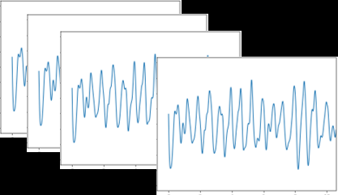
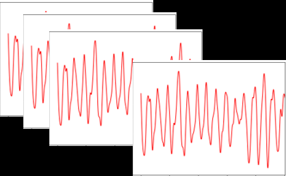

✅ 더블체크 결과 — 그 논문 맞습니다
⚠️ README_CSI_HRV.md 수치 정정
기존 메모: "ECG 대비 R-R 상대오차 2.53~4.83%, 복조 MSE 0.35%"
→ 본문에 해당 수치 없음. 다른 논문의 수치이거나 환각 가능. 발표·문서에선 아래 실제 본문 수치로 교체할 것:
- • RMSE 130ms (peak interval 평균, 모든 위치 평균)
- • SDNN 상대오차 8.8% (최소)
- • 평균 IBI 오차 최대 50ms = HR 5.7BPM 오차
🎯 한 줄 요약
FFT 없이 시간영역에서, 두 안테나의 CSI 진폭을 나눠서(quotient) 노이즈를 제거하고, 여러 subcarrier 중 SDNN이 작은 신호 N개를 골라 합쳐서 박동 간격(IBI)을 직접 검출 → 상용 Wi-Fi로 HRV를 처음으로 추출.
📊 핵심 결과 수치
(peak interval)
(최소)
(최대)
(피험자 정지)
⚙️ 제안 알고리즘 — 6단계 (Fig.1 흐름도 한글 재구성)
CSI Quotient — 두 안테나 진폭의 비율 계산
같은 수신기의 두 안테나(rx0, rx1)에서 받은 CSI 진폭을 나눠서 사용. 두 안테나엔 같은 임펄스 노이즈 δ(f,t)와 같은 위상 오프셋 e-jϕ가 곱해져 있다고 가정 → 비율을 취하면 공통 노이즈가 약분되어 사라짐.
대역통과 필터 (BPF) 1 – 3.5 Hz
각 subcarrier × 수신 안테나 조합에 2차 Butterworth BPF 적용. 심박 기본 주파수 ~1–2Hz를 통과시킴. Forward-Backward 필터(영위상)라 신호 시간이 밀리지 않음. 호흡 신호(0.2–0.5Hz)는 차단.
1차 Peak 검출 (각 subcarrier별)
SciPy find_peaks로 각 신호의 local maximum을 찾되, 인접 peak 간격 ≥ T_i = 0.35초 제약. (= 최대 검출 주파수 1/0.35 ≈ 2.86Hz, 약 171BPM 상한)
신호 선택 — SDNN 작은 순 N개
각 신호의 peak 시퀀스 → IBI 계산 → SDNN(IBI 표준편차) 계산. 심박을 잘 잡은 subcarrier일수록 SDNN이 작음(IBI가 안정적) → SDNN 작은 순으로 N_s = 5개 선택.
💡 이게 논문 핵심 인사이트: "좋은 신호일수록 IBI 분산이 작다"는 가정.
선택 신호 시간영역 합산
선택된 5개 신호를 정규화 후 시간영역에서 그대로 더함. 신호 간 노이즈가 무상관이라 가정하면, 합산 시 SNR이 √N 배로 개선됨.
최종 Peak 검출 → HRV 출력
합산 신호에 다시 같은 peak 검출(T_i=0.35s 제약) → IBI 시퀀스 = HRV 출력.
🔧 하이퍼파라미터
🧪 실험 셋업
하드웨어
- • Ubuntu 14.04 PC × 2 + Intel 5300 NIC
- • Linux 802.11n CSI Tool 사용
- • 옴니 안테나 9.5cm 간격, 1×3 SIMO
- • 중심주파수 5.32GHz (W64), BW 20MHz
- • 30/56 subcarrier 기록
- • 샘플링 ~160Hz 평균 (일정 X)
- • 논문 = Intel 5300 NIC 노트북. 우리 = ESP32-S3
- • 논문 = 한 수신기에 안테나 3개(SIMO). 우리 = ESP32 2개(TX+RX, 안테나 각 1개)
- • 즉 step 1 quotient를 같은 수신기 안에서 못 함 → 다른 subcarrier 간 비율 또는 위상차분으로 대체 필요
피험자 / 환경
- • 의자에 깊게 앉은 자세 (누운 자세 아님)
- • 60초간 자연호흡, 정지
- • 안테나 높이 90cm (가슴 높이)
- • LOS 거리: 70 ~ 150cm (20cm 간격)
- • Offset: 23 ~ 38cm (3cm 간격)
- • 기준 센서: 손가락 PPG
- • 동기화: NTP
- • Peak 검출 (PPG측): Heartpy 라이브러리
🎯 MajuBom에 어떻게 적용할까
바로 이식 가능한 것
- ✅ BPF 1–3.5Hz (Butterworth 2차, Forward-Backward) — 그대로 적용
- ✅ SDNN-based subcarrier selection — N_s=5로 시작. 우리는 64 subcarrier 있으니 충분
- ✅ peak 간격 ≥ 0.35s 제약 — vital_csi2.py의 distance 파라미터에 적용
- ✅ 정규화 후 시간영역 합산 — PCA 대신/병용 가능
우리 환경 적응 필요
- ⚠️ Quotient 모델을 어떻게? — 우리 RX는 안테나 1개라 "같은 수신기 두 안테나" 비율 불가능 → 같은 수신기의 다른 subcarrier 간 비율 또는 위상 차분(PhaseBeat 방식)로 대체
- ⚠️ 샘플링 주파수 — 논문 160Hz, 우리 ~100~111Hz. BPF/peak detection 파라미터 그대로 동작하지만 RMSSD 한계는 우리 쪽이 더 큼 (샘플간격 10ms ≈ RMSSD 정상값과 비슷)
- ⚠️ 측정 시간 — 논문 60초, 우리 90초. 더 길어서 IBI 통계 안정성은 우리가 유리
📌 코드 작업 우선순위 (vital_csi2.py 수정안)
- 현재 PCA → subcarrier별 BPF + peak + IBI → SDNN으로 N=5 선택 → 정규화 후 합산으로 교체
- 1차 peak 검출에 T_i=0.35s 제약 명시
- quotient 시도: 64 subcarrier 중 강한 신호 두 개 골라 비율 → 효과 비교
- RMSSD가 SDNN보다 작아지는지 확인 (현재 RMSSD>SDNN 문제 해결 목표)
📄 원본 PDF 페이지 (클릭 = 확대)
🖼 추출된 그림 (Fig.1, Fig.2 원본)

Fig.1 — 처리 흐름. CSI 진폭 → quotient(rx0/rx1, rx1/rx2) → BPF → peak → signal selection → sum → 최종 peak → HRV

Fig.2 — 실험 환경. 의자에 앉은 피험자, Tx 안테나 3개(1개만 사용), Rx 안테나 3개. LOS 거리·offset 표시